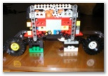
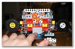
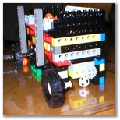
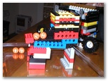
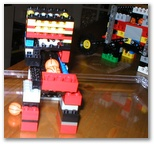
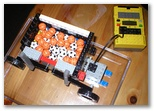
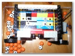

{% include JB/setup %}

<span class="textbg">(8 images)</span><br>
<span class="textsm"></span>
<p class="desc">
<p><span class="textreg">Click a picture to see a larger view.</span><br>
<hr size="1">
<a href="target0.html"></a>
<a href="target1.html"></a>
<a href="target2.html"></a>
<a href="target3.html"></a>
<a href="target4.html"></a>
<a href="target5.html"></a>
<a href="target6.html"></a>
<a href="target7.html"></a>
</p>